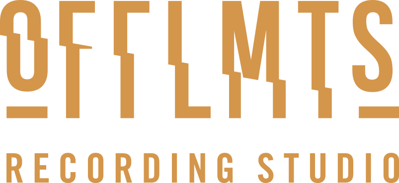

Dritte · OFFLMTS

offlmts.comScorri →Prima della sessione mandami un provino, anche fatto col telefono.
Non ce l'hai? Va bene un pezzo già uscito o un demo.
Scritto per intero prima di entrare. A memoria non serve.
Le ore di registrazione non sono ore di scrittura.
Prova il pezzo sulla base: intonazione e fiato.
L'intonazione si corregge. La convinzione no.
I WAV del beat, le tracce separate se ci sono, il testo e il pagamento.
Microfono, cuffie, acqua e caramelle ci sono già.
Fino a 4 ore. Un rap semplice si chiude in 1 o 2, in media 3.
Senza fretta e senza paura di premere REC.
Niente provino: il mix arriva su Telegram entro 2 settimane, poi le revisioni.
Al provino ci si affeziona, e poi il mix suona strano.
La checklist completa
→ link in bio